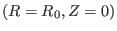
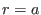
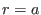

The normalized pressure gradient,  , which appears frequently in
tokamak literature, is defined by[2]
, which appears frequently in
tokamak literature, is defined by[2]
which can be further written
where
. Equation (505) can be
further written as
where
,
, and  is the minor
radius of the boundary flux surface. (Why is there a factor in the
definition of ?)
is the minor
radius of the boundary flux surface. (Why is there a factor in the
definition of ?)
The global magnetic shear  is defined by
is defined by
which can be written
In the case of large aspect ratio and circular flux surface, the leading order
equation of the Grad-Shafranov equation in
 coordinates is
written
coordinates is
written
which gives concentric circular flux surfaces centered at
.
Assume that  is uniform distributed, i.e.,
, where is the total current within the flux surface . Further
assume the current is in the opposite direction of
is uniform distributed, i.e.,
, where is the total current within the flux surface . Further
assume the current is in the opposite direction of
 , then
, then
 . Using this, Eq. (509) can be solved
to give
. Using this, Eq. (509) can be solved
to give
Then it follows that the normalized radial coordinate
relates to
by
(I check this numerically for the case of EAST discharge
#38300). Sine in my code, the radial coordinate is  , I need to
transform the derivative with respect to
to one with respect to
, which gives
, I need to
transform the derivative with respect to
to one with respect to
, which gives
The necessary condition for the existence of TAEs with frequency near the
upper tip of the gap is given by[2]
which is used in my paper on Alfvén eigenmodes on EAST
tokamak[8]. Equations (511) and (512) are used in
the GTAW code to calculate and .
yj
2018-03-09